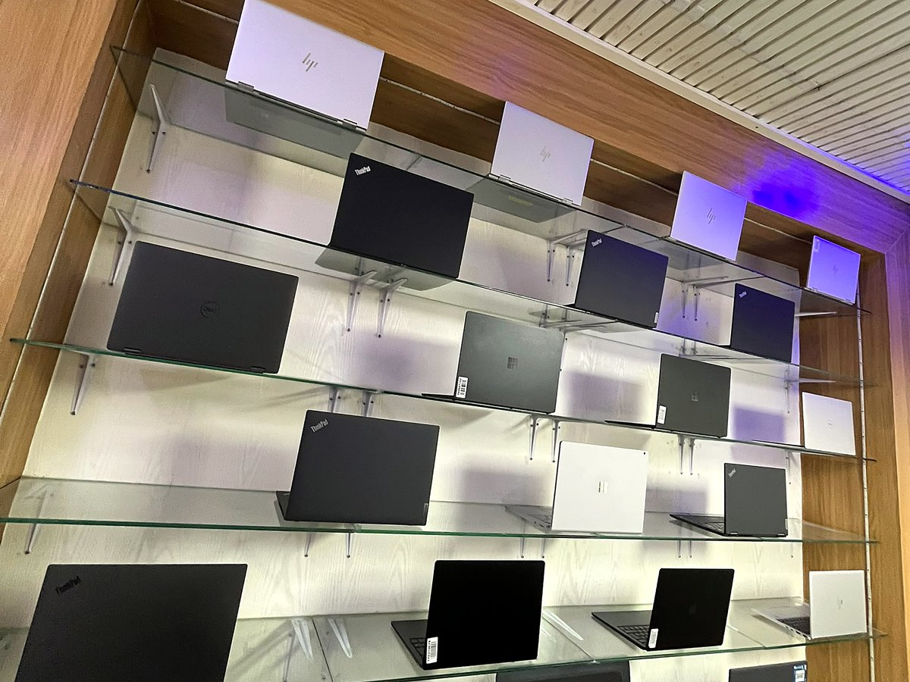
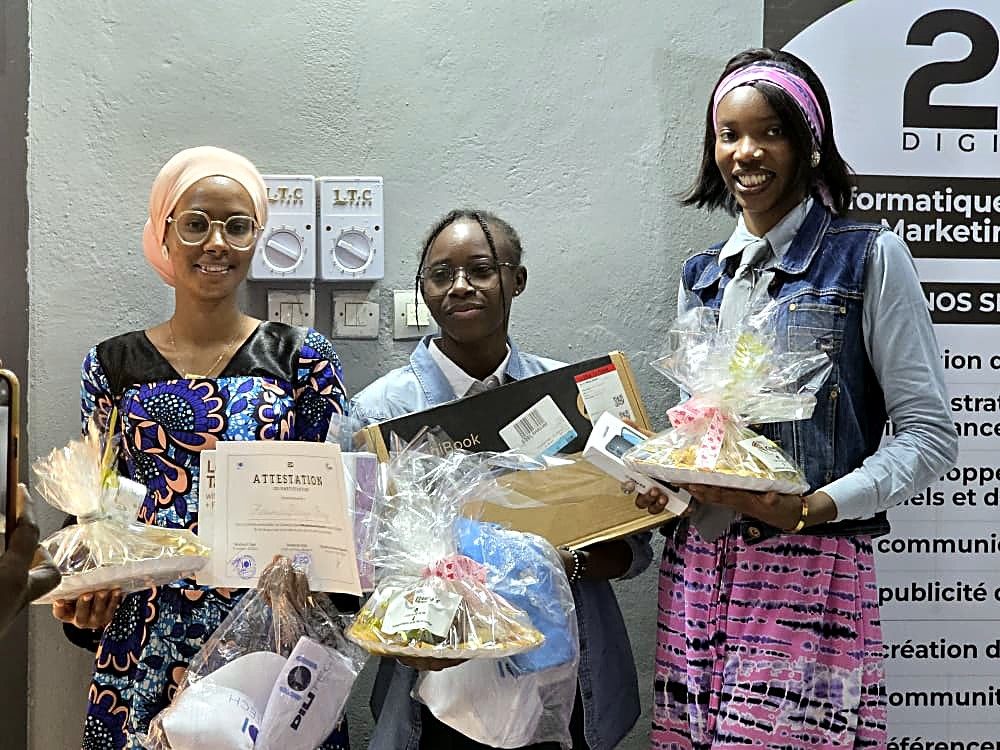
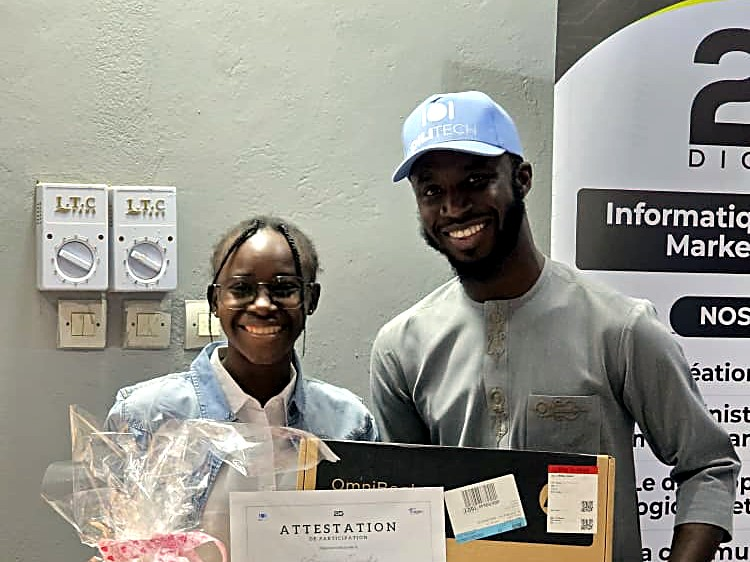
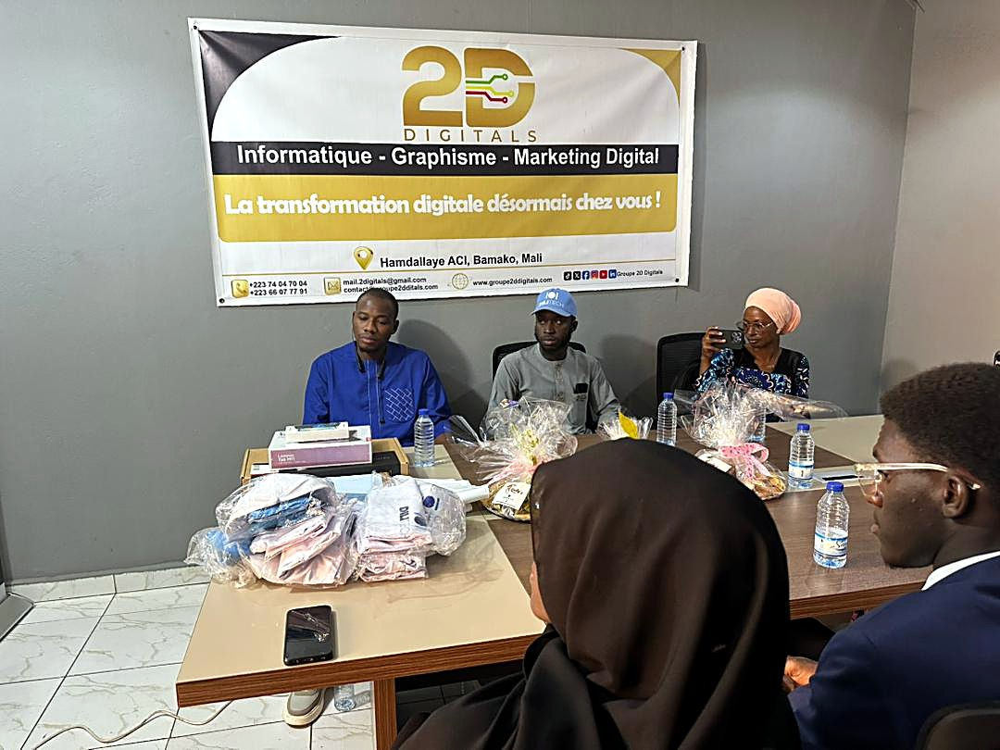

01
On part de votre usage
Bureautique, terrain, création, salle de formation, parc de vingt postes : chaque situation appelle un arbitrage différent entre mémoire, autonomie, robustesse et budget.
Ordinateurs portables toutes marques, accessoires informatiques et matériel réseau, choisis selon votre usage réel.
Du conseil à la maintenance, la même équipe vous accompagne après la vente.
Le catalogue
Nous partons toujours de l'usage, jamais de la fiche technique. Dites-nous ce que la machine devra faire : nous vous orientons vers ce qui tient la charge, sans vous vendre ce qui ne servira pas.
En ce moment
Pour quel usage ? Dites-le nous, la sélection s’adapte — et nous nous en souviendrons.
Notre façon de travailler
Un ordinateur mal choisi coûte plus cher qu'un ordinateur cher : il est remplacé deux fois plus vite. C'est pour cela que nous commençons toujours par la même question — qu'allez-vous en faire ?
01
Bureautique, terrain, création, salle de formation, parc de vingt postes : chaque situation appelle un arbitrage différent entre mémoire, autonomie, robustesse et budget.
02
Maintenance, remplacement de batterie ou de disque, remise en état complète : nos techniciens interviennent à Torokorobougou, et chaque devis est établi avant l'intervention.
03
Bamako, Dakar, Abidjan, Lomé, Conakry, Bangui et N'Djaména : la disponibilité est consolidée sur l'ensemble du réseau, et annoncée point de vente par point de vente.
04
Sur le neuf comme sur nos reconditionnés, avec le rapport de test remis avec la machine. Le service après-vente est assuré par la même équipe qui a vendu.
Nos métiers
Du conseil avant l'achat au service après-vente, la même équipe suit votre matériel de bout en bout.

01
Portables, postes fixes et accessoires, neufs ou reconditionnés. La bonne machine, pas la plus chère.
Le catalogue02
Diagnostic et devis avant toute intervention. Batterie, disque, mémoire, système, données.
03
Une garantie écrite et un rapport de test. Le suivi reste chez l'équipe qui a vendu.
04
Relevé Wi-Fi sur site, câblage, baies, bornes et caméras IP, documentés à la livraison.
Le matériel05
Sessions professionnelles à Bamako, inscriptions ouvertes.
Demander le calendrier06
Dix postes ou cent, pour entreprises, écoles et ONG.
Notre réseau
Ce que nous n'avons pas en boutique, un partenaire revendeur l'a souvent déjà — en Afrique de l'Ouest et centrale.

Vie locale
Au-delà de la boutique, Dilitech équipe des initiatives locales et soutient les jeunes talents du numérique à Bamako.
« Sponsor officiel du Challenge Digital, contribuant activement à la promotion de l'innovation et de l'entrepreneuriat digital. »
Attestation de reconnaissance — 2D Digitals


Comment ça se passe
1
Ajoutez les produits à votre sélection depuis le catalogue, ou décrivez-nous simplement votre besoin.
2
Nous confirmons la disponibilité réelle sur le réseau, le prix ferme et le délai depuis le point de vente le plus proche.
3
Un devis chiffré, avec — si nous pensons que c'est mieux pour vous — une alternative argumentée.
4
Retrait au showroom de Torokorobougou, livraison sur Bamako, ou acheminement par le réseau vers votre ville.
Aucun paiement en ligne : la commande se finalise avec un commercial, par WhatsApp ou au showroom. Vous êtes revendeur et voulez nous rejoindre ? Écrivez-nous.
Conseils & franc-parler